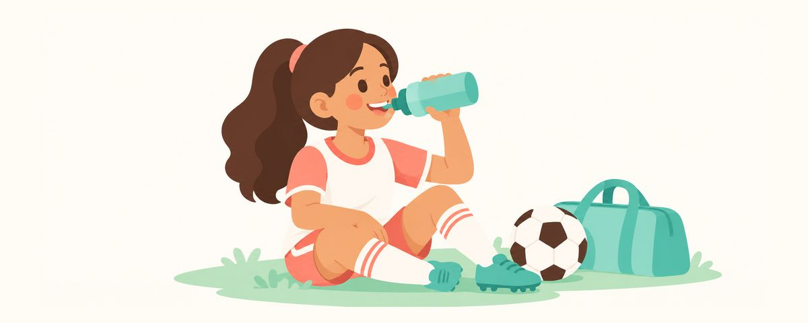

После тренировки — вода: спортивные и энергетические напитки у подростков и эрозия эмали
В спортивных и энергетических напитках много кислоты и сахара, и они разрушают зубы. Почему после обычной тренировки хватает воды, как пить такие напитки и ранние признаки эрозии.
Коротко о главном
- Во время и после тренировки нужна только вода
- Спортивные и энергетические напитки кислые и очень сладкие
- Был такой напиток? Прополощите рот водой и подождите 30 минут с чисткой
Многие подростки по привычке покупают спортивный напиток после каждой тренировки в секции. А в сессию или перед контрольными некоторые тянутся к энергетикам. Рассказываем, как такие напитки влияют на зубы и что лучше пить ребёнку, который занимается спортом, — так, чтобы статью могли прочитать вместе и родители, и подросток.
Почему спортивные напитки разрушают зубы
Внешний слой зуба (эмаль) — самая твёрдая ткань в организме, но перед кислотой она уязвима. Когда кислый напиток касается зуба, поверхность понемногу размягчается, а если это повторяется часто, она постепенно растворяется и истончается. Это называют эрозией эмали. Кариес возникает из-за кислоты, которую выделяют бактерии, питаясь сахаром, а спортивные и энергетические напитки очень кислые и содержат много сахара, поэтому могут вызывать и эрозию, и кариес одновременно.
Особенно вредит то, как их пьют. Если всю тренировку держать бутылку в руке и потягивать понемногу, зубы без перерыва омываются кислотой. Слюна обычно смывает кислоту во рту и восстанавливает поверхность зуба, но при постоянном питье на это нет времени. А ещё во время тренировки дышат ртом, и во рту легко пересыхает — это тоже не на пользу.
Эрозия развивается медленно, и поначалу её почти не чувствуешь. Частые ранние признаки — зубы ноют от холодной воды или края передних зубов просвечивают, как стекло. Если заметить такие изменения и сменить привычки, можно помочь остановить её развитие.
Так нужны ли эти напитки на тренировке? При большинстве нагрузок, чтобы восполнить жидкость, достаточно воды. Электролиты, потерянные с потом, тоже прекрасно восполняет обычная еда, если нагрузка не длительная и не интенсивная. Энергетические напитки особенно кислые и содержат много кофеина, поэтому подросткам их не рекомендуют.
Начните с бутылки воды
Вместо того чтобы просто запрещать напитки, объясните причину, чтобы подросток мог выбирать сам, и начните с простых привычек.
- Пусть в спортивной сумке всегда будет бутылка воды. С ней реже заходят в магазин за напитками.
- Во время и после тренировки пейте воду. Держите бутылку под рукой, чтобы сразу попить, когда хочется.
- Если всё же пьёте спортивный напиток, выпейте его сразу, а не потягивайте понемногу долго.
- После этого попейте воды или прополощите рот водой.
- Чистите зубы не сразу, а через 30 минут. Если сразу тереть размягчённую кислотой поверхность, она может стереться сильнее, поэтому слюне нужно дать время её восстановить.
- Как обычно, продолжайте чистить зубы пастой с фтором 2 раза в день.
Частая ошибка родителей — держать в холодильнике целые упаковки спортивных напитков, считая их «полезными после спорта». Чтобы подросток видел правило «основа — вода, напитки — изредка», пусть и дома воду будет легко взять.
Разговаривая с подростком, не пугайте, а свяжите это со спортивными результатами. Коротко, например: «Телу для нагрузки нужна вода. Беречь зубы — тоже часть подготовки». Ребёнок может обидеться, что все друзья пьют такие напитки. Тогда договоритесь о днях, когда можно, и о правилах: выпить сразу и прополоскать рот водой, — так легче согласиться.
Частые вопросы
А если разбавлять спортивный напиток водой?
Даже разбавленный напиток остаётся кислым и сладким, а пить его, наоборот, легче дольше и понемногу. При обычных тренировках проще и надёжнее всего пить воду.
Если напиток без сахара, это нормально?
Меньше сахара — меньше риск кариеса, но если напиток кислый, проблема растворения зубов остаётся. Важнее не какой напиток выбрать, а привычка пить в основном воду.
А на соревнованиях или тренировках по несколько часов?
При длительной и интенсивной нагрузке может понадобиться восполнить электролиты. Но и тогда лучше выпить сразу, а не потягивать долго, и потом прополоскать рот водой.
Разве не лучше почистить зубы сразу после напитка?
Сразу после кислого напитка поверхность зуба размягчена. Сначала прополощите рот водой, а почистите зубы через 30 минут.
Можно ли повернуть эрозию вспять?
Растворившаяся эмаль не нарастает заново. Поэтому важно сменить привычки при первых признаках и показаться стоматологу.
Когда идти к стоматологу
- Зубы часто ноют от холодной воды или сладкого
- Края передних зубов просвечивают
- Поверхность зубов выглядит необычно гладкой, стёртой
- Подросток почти каждый день пил спортивные или энергетические напитки
- Зуб болит или на нём видны коричневые или чёрные точки
Получайте вовремя
Укажите дату рождения ребенка (или предполагаемую дату родов) в приложении «Зубной календарь», и эти статьи будут приходить вам напоминаниями в нужное время. Бесплатно и без регистрации.
Источники
Информация в приложении носит общий образовательный характер и не заменяет консультацию специалиста. По вопросам о состоянии зубов ребёнка обратитесь к стоматологу.